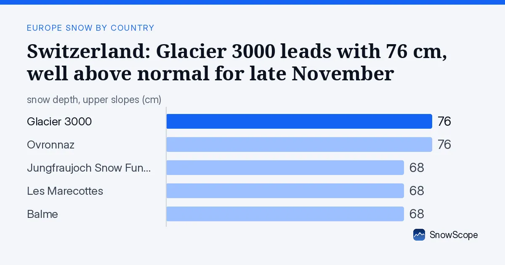

Switzerland: Glacier 3000 leads with 76 cm, well above normal for late November
Switzerland is running far ahead of the typical snow for late November. Glacier 3000 sits at 76 cm, which is rarer than nine out of ten past winters on this date.
See the live snow forecast for Glacier 3000 in the SnowScope appSnow depth, powder alerts and the 3D map, free.
Above the nine-winter mark
Glacier 3000 now holds 76 cm. This depth is higher than what the mountain has seen on 23 November in nine years out of the last ten. The usual depth for this date is 20 cm, so the current snow is nearly four times normal. That is the kind of head start that reshapes an early season.
Five of Switzerland's main resorts are running well above their seasonal mean. Ovronnaz also has 76 cm against a typical 20 cm. Les Marecottes and Balme, lower stations in the Valais Alps and the Mont Blanc range, have jumped to 68 cm from their normal 27-30 cm in late November. Even Jungfraujoch Snow Fun Park, which sits at a height where snow is always plentiful, has 68 cm when it normally sees 59 cm at this time.
| Resort | Today | Normal for the date | Share of normal |
|---|---|---|---|
| Glacier 3000 | 76 cm | 20 cm | 380 % |
| Ovronnaz | 76 cm | 20 cm | 380 % |
| Jungfraujoch Snow Fun Park | 68 cm | 59 cm | 115 % |
| Les Marecottes | 68 cm | 27 cm | 252 % |
| Balme | 68 cm | 30 cm | 227 % |

Three hot zones in three days
The past 72 hours brought up to 79 cm across the region. The snow did not fall evenly. The Bernese Oberland topped out at 144 cm in three days, the Valais Alps at 139 cm, and central Switzerland at 103 cm. Glacier 3000, which lies in the Bernese high country, received 99 cm in that window and now leads every Swiss resort.
This kind of burst is what happens when moist air hits the high ridges from the north. Early-season snow tends to be light and settles fast, but 144 cm in three days on steep terrain is a signal worth respecting. The snow line sits at 900 m today; below that, cover is patchy and thin ground is still likely.

Height makes the difference
Snow depth rises sharply with altitude. Between 500 and 1000 m, the mean is just 1 cm and only 29 percent of the land is white. Jump to 1000-1500 m and the mean reaches 7 cm with 84 percent cover. By 1500-2000 m, you have 18 cm and near-complete coverage. Above 2000 m, the snow thickens to 24 cm at 2000-2500 m and 36 cm above 2500 m, with 100 percent cover.
This layered picture tells the story of a wet season that has arrived early at high elevations but has not yet consolidated into a stable base at lower resorts. Rocks, grass and thin patches still mark many slopes below 1500 m.
More snow is on the way
Up to 25 cm is forecast over the next three days. The snowiest single day will be 25 November, with roughly 20 cm expected. The week ahead holds up to 29 cm across the forecast window. This pace is not typical; it means the mountains are catching the tail end of an active system that is not common in late November.
Beyond day seven, the second week looks much quieter. Only 3 cm is expected between 1 and 7 December. The current pulse of snow is the event to watch and to ski while it lasts.
Trend: a week of buildup
One week ago, only 16100 km2 of the region held snow. Yesterday it was 21990 km2. Today it is 23710 km2. That is a gain of 7610 km2 in a week. The jump in the past 24 hours alone was 1720 km2, with 76 percent of the mapped region now white.
Glacier 3000 has led the rankings for five of the past seven days. The consistency shows that the high peaks of the Bernese Oberland are the pivot of this event, drawing the most moisture and anchoring the snow line highest.
What you need to know
Early-season snow is light and may hide rocks and rough ground, especially below 1500 m. Check conditions locally and watch the official avalanche bulletin before heading off-piste. The window of good snow will narrow again after this week, so the next few days are prime time for the high terrain where the depth and cover are most reliable.
Tips for skiers
- Glacier 3000, Ovronnaz and Jungfraujoch Snow Fun Park are the depth leaders; all three have 68 cm or more and sit above 2195 m where cover is complete.
- Stay above 1500 m if you want continuous snow cover. Below that height, rocks and patches are common even after the recent fall.
- The next three days will add snow, with 25 November the heaviest. Plan your timing to catch the new snow before it settles.
- Early-season snow is typically light and can hide hazards. Check the official avalanche bulletin before you ski off-piste.
- This surge is rare for the date and will not last; the week after 25 November turns much drier.
About these numbers
Resort snow depths are the deepest snow on the resort's upper slopes on the date shown; they are estimates for an area, not a measurement at one point. Forecasts can change. Always read the official avalanche bulletin before going off-piste.
Cite this report
For research, teaching or the press: the numbers and charts are free to reuse under CC BY 4.0 with this citation.
SnowScope (2026), Switzerland: Glacier 3000 leads with 76 cm, well above normal for late November, https://snowscope.app/blog/en/2026/11/switzerland-rare-early-snow-23-november-2026.html, accessed 2026-11-23
SnowScope (Atlas Labs). (2026, November 23). Switzerland: Glacier 3000 leads with 76 cm, well above normal for late November. SnowScope snow reports. https://snowscope.app/blog/en/2026/11/switzerland-rare-early-snow-23-november-2026.html
BibTeX
@misc{snowscope2026switzerlandrareearlysnow,
author = {{SnowScope (Atlas Labs)}},
title = {Switzerland: Glacier 3000 leads with 76 cm, well above normal for late November},
year = {2026},
month = nov,
howpublished = {\url{https://snowscope.app/blog/en/2026/11/switzerland-rare-early-snow-23-november-2026.html}},
note = {Published 2026-11-23 14:06 UTC; accessed 2026-11-23}
}· CC BY 4.0 · Methods, data and tools →
Glacier 3000: snow and temperature by height, this winter vs last (tools) →
Follow Glacier 3000
Free: a message when fresh snow is coming, and the forecast every morning.
More snow reports

By 25 November, 64 cm of new snow forecast at Jungfraujoch Snow Fun Park. Data from 22 November.

Only Borovets and Bansko have a trace of snow at the top today, 2 cm each. A week ago Borovets had 11 cm. Day by day, and the one snowy day in the forecast.

From 13 to 19 November 2026 Slovenia got the most snow and kept it; Serbia and Croatia had a deep but short white weekend; Montenegro only on Durmitor; Bulgaria almost none. The ranking, with links to each country report.